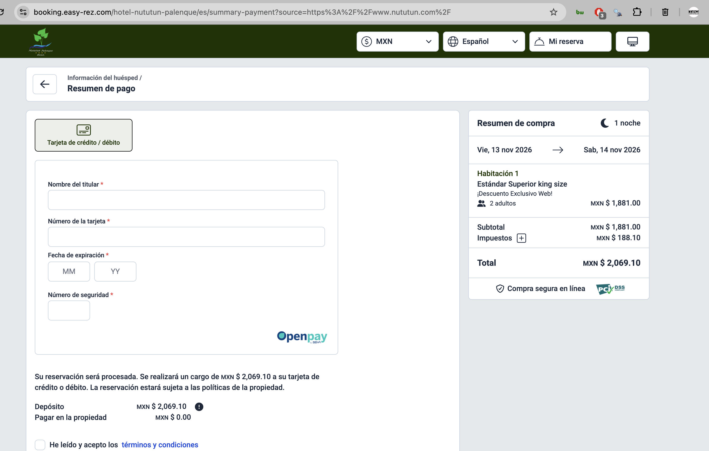
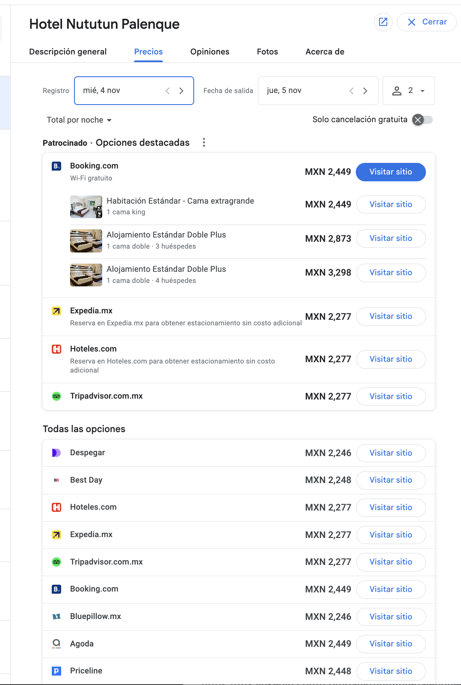

El sitio web del hotel y su motor de reservas funcionan de punta a punta: el ejercicio de reserva real llegó sin fricción hasta la pantalla de cobro con tarjeta. Lo que no funciona es la medición: el tag que registra cada reserva se rompió hace ~4 semanas — el sitio se republicó el 21 de octubre y días después el tag dejó de cargarse. El mismo proveedor que administra sitio y motor rompió su propio contador.
Como parte de la visita se simuló la experiencia de un huésped real: entrar al sitio, elegir fechas, seleccionar habitación y avanzar hasta la confirmación de pago.
Del sitio → motor Easy-Rez → selección de habitación → datos del huésped → pantalla de pago con tarjeta vía OpenPay (BBVA). Cargo: MXN $3,500.01 de depósito — el 100% por adelantado, $0.00 a pagar en propiedad.

El sistema cobra y cobra bien — tarjeta, pasarela bancaria, depósito completo. La infraestructura de venta directa existe y está viva.
En Google Hotels, la ficha de Nututún muestra 10+ canales con precio — todos intermediarios: Expedia $2,277, Booking $2,449, Hoteles.com, Best Day, Trip.com $2,049, Despegar, Agoda, Vio.com, Super.com. El "Sitio oficial" no existe: Easy-Rez no está alimentando tarifas a Google, así que ni siquiera el enlace de reserva gratuito (Free Booking Link) está activo. El hotel paga comisión por demanda que ya era suya.

Cobrar la estancia completa por adelantado es la política más estricta posible. Frente a Booking (que ofrece "pagar en el hotel" o cancelación gratis), un huésped que duda prefiere el canal donde no le cargan todo hoy. Vale la pena evaluar depósito parcial o primera noche.
Punto a levantar con la administración: no es falla técnica, es decisión comercial que afecta la conversión.
La acción de conversión "Reserva Online easy rez" (creada el 15 ene 2026, funcionando bien) dejó de recibir señal. Última reserva medida: 6 oct 2026. Estado en Google: "Configuración errónea". Easy-Rez asegura que el tag está instalado — entonces o nadie reservó directo en un mes, o el tag está muerto: se verifica con una reserva de prueba.
El sitio y el motor son del mismo proveedor (Easy-Rez: su "WebSite PRO" es Duda reetiquetado). El sitio se republicó el 21 oct 2026 y alrededor del 27 oct el tag dejó de cargarse — la cronología apunta a esa republicación como el evento que tumbó la medición. El arreglo es un ticket a soporte de Easy-Rez con el ID de conversión 7461874946 en la mano.
Se revisó la consola completa de Easy-Rez (Motor de Reservas, Ajustes, Herramientas de Venta, Sitio Web): no existe campo de seguimiento editable para el hotel. El tag de conversión lo inyecta Easy-Rez del lado de su código. La reparación es un ticket a soporte con: Conversion ID 7461874946 · Cuenta 397-733-5101 · última conversión 6 oct 2026.
Se verificó también que la consola trae sección "Consultas y Reportes" (Dashboard, Estadísticas, Reportes del Motor y del PMS) — ahí vive la materia prima para el frente de estadísticas de reservas.
www.nututun.com corre sobre "WebSite PRO" de Easy-Rez — su CMS, que es Duda reetiquetado — hospedado en AWS con SSL correcto. Técnicamente sano; el problema es de propiedad: sitio, motor y medición dependen de un solo proveedor, y la interacción del sitio es mínima (8 acciones en 7 días: 6 llamadas, 2 formularios).
| Aspecto | Estado |
|---|---|
| Plataforma | Duda (CMS de agencias) |
| Hosting / servidor | AWS Virginia · nginx — sano |
| Certificado SSL | Activo, redirige a HTTPS — correcto |
| Dominio | Registrado desde antes de 2010 — antigüedad positiva |
| Control editorial | Depende del proveedor — cuello de botella |
Lo documentado define el camino: el hotel no necesita más proveedores — necesita alguien que mida, vigile y controle lo que sus proveedores hacen.
| Frente | Movimiento | Por qué |
|---|---|---|
| Medición | Ticket formal a Easy-Rez + reserva de prueba verificada | Revivir el contador de ventas real |
| Google Ads | Pagos automáticos, redistribución PMax→Search, conversión real como objetivo | Los $300/día deben comprar noches, no clics de WhatsApp |
| Google Hotels | Confirmado en ficha: ni siquiera el enlace gratuito está conectado. Pedir a Easy-Rez activar el feed de tarifas → Free Booking Links (gratis) → luego campaña Hotel pay-per-stay | El carrusel con precio real vale más que el anuncio de texto; se paga solo si el huésped se queda |
| Sitio | Documentar quién puede editar qué hoy; a mediano plazo evaluar sitio administrado con medición nativa | Un solo proveedor sin auditoría ya demostró lo que pasa; el sitio propio es la siguiente etapa, manteniendo Easy-Rez como motor |
| Estadísticas | "Consultas y Reportes" del motor como fuente: ocupación, canal, ingresos — el frente D2 ya tiene datos vivos | Decidir con números del negocio, no con métricas de vanidad |